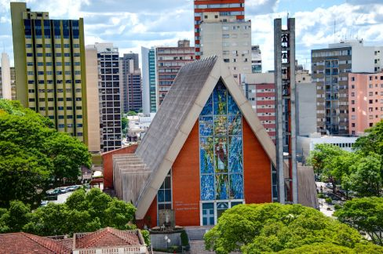
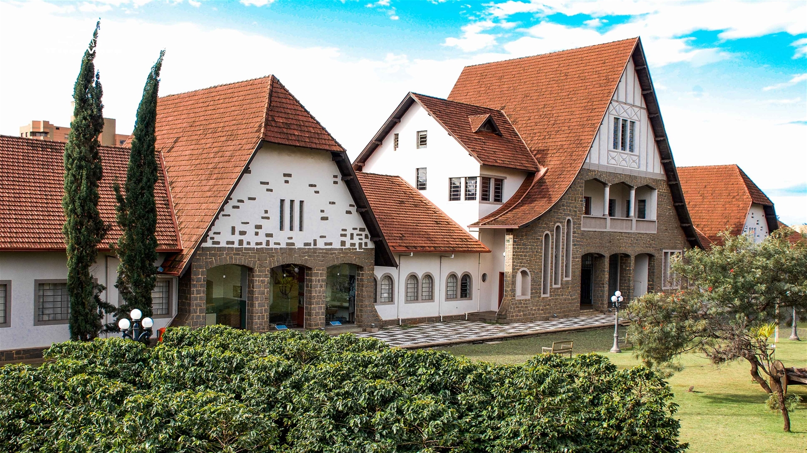

Pontos Turísticos de Londrina
Londrina é uma linda cidade com cerca de 575.377 habitantes, paisagens muito bonitas e um clima agradável. Confira alguns pontos turísticos de Londrina!

Catedral de Londrina
A catedral de Londrina fica localizada no centro da cidade, uma igreja católica maravilhosa com a arquitetura belíssima. O monumento moderno tem um formado de chalé, que pode ser visto de várias partes da cidade. Contém vitrais lindos e coloridos e também missas. Horário de funcionamento: funciona das 08:00 às 18:00 de segunda a sexta, sábado das 08:30 às 11:00 e é fechado aos domingos.

Histórico de Londrina
O museu histórico de Londrina está localizado no centro da cidade, ao lado do terminal urbano. É um belíssimo local, repleto de artefatos históricos inspiradores, inclusive uma Maria fumaça! Divertido e educativo para as crianças e para os adultos. Horário de funcionamento: Funciona das 09:00 às 17:00 de terça a domingo, é fechado às segundas feiras.

Jardim Botânico
Além de um lindo jardim e um ótimo local para fazer piqueniques, o jardim botânico é uma das maiores unidades de pesquisa e conservação de espécies nativas e exóticas do Paraná. Espécies silvestres raras, ameaçadas de extinção e importantes para restauração e reabilitação de ecossistemas podem ser encontradas lá. Muito bom para passeios e para apreciar a natureza! O Jardim Botânico fica na Avenida dos Expedicionários, 200, no Conjunto Residencial Vivendas do Arvoredo. Horário de funcionamento: Funciona das 08:00 às 18:00 todos os dias, mas é fechado às segundas feiras.